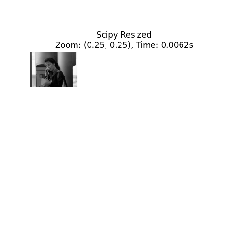
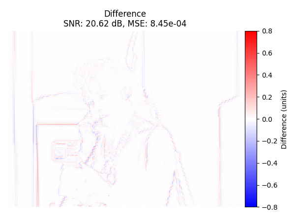
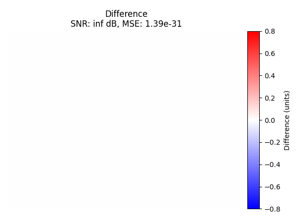
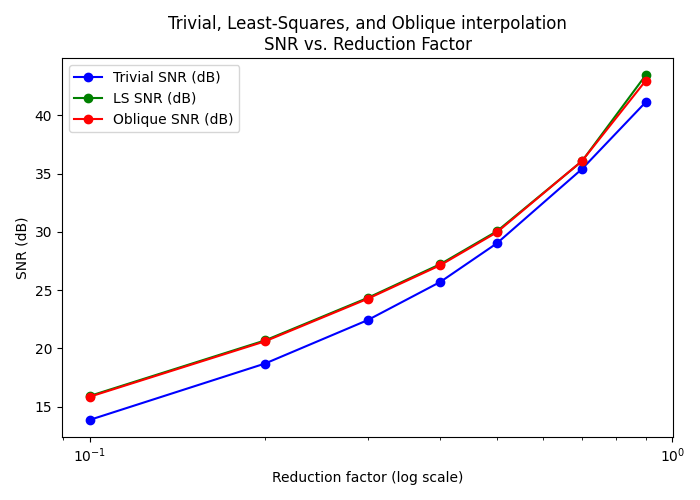

Interpolate 2D Images#
Interpolate 2D images with standard interpolation, least-squares, and oblique projection. Compare them to SciPy zoom. We compute SNR and MSE only on a central region to exclude boundary artifacts. A summary of the cost/benefit tradeoff of the three methods is provided at the bottom of this page.
You can download this example at the tab at right (Python script or Jupyter notebook.
Required Libraries#
We import the required libraries, including NumPy for numerical computations, Matplotlib for plotting, and the custom resize function from the splineops package.
Helper Functions#
- We define
a utility to crop out ~20% borders around the image;
SNR and MSE on that central cropped area;
resizing functions.
def crop_to_central_region(image, border_fraction):
"""
Return a central sub-region of 'image', skipping 'border_fraction'
of the width/height on all sides.
"""
H, W = image.shape
top = int(H * border_fraction)
bottom = int(H * (1 - border_fraction))
left = int(W * border_fraction)
right = int(W * (1 - border_fraction))
# Guard against degenerate cases
top = max(top, 0)
left = max(left, 0)
bottom = min(bottom, H)
right = min(right, W)
return image[top:bottom, left:right]
def compute_snr_and_mse_cropped(original, processed, border_fraction):
"""
Compute SNR and MSE on the 'central' cropped area, ignoring border_fraction
of the image on each side.
"""
# Crop both images consistently
orig_cropped = crop_to_central_region(original, border_fraction)
proc_cropped = crop_to_central_region(processed, border_fraction)
# Now compute SNR/MSE on that region
signal_power = np.mean(orig_cropped**2)
noise_power = np.mean((orig_cropped - proc_cropped)**2)
mse_val = noise_power
if noise_power <= 1e-30: # near-zero difference
snr_val = float('inf')
else:
snr_val = 10 * np.log10(signal_power / noise_power)
return snr_val, mse_val
def resize_with_scipy_zoom(input_image, zoom_factors, degree, border_fraction):
"""
Resize using SciPy's zoom, then resize back and compute SNR/MSE
*only on a central region* to avoid boundary artifacts.
"""
start_time = time.perf_counter()
resized_image = zoom(input_image, zoom_factors, order=degree)
time_elapsed = time.perf_counter() - start_time
reverse_zoom_factors = 1.0 / np.array(zoom_factors)
recovered_image = zoom(resized_image, reverse_zoom_factors, order=degree)
# Compute SNR/MSE on central region
snr, mse = compute_snr_and_mse_cropped(input_image, recovered_image, border_fraction)
return resized_image, recovered_image, snr, mse, time_elapsed
def resize_and_compute_metrics(input_image, method, degree, zoom_factors, border_fraction):
"""
Resize a 2D image using the specified method, then resize back
to original size and compute SNR, MSE, and timing *only on a central region*.
"""
if np.isscalar(zoom_factors):
zoom_factors = (zoom_factors, zoom_factors)
if method == "scipy":
return resize_with_scipy_zoom(
input_image, zoom_factors, degree, border_fraction
)
else:
start_time = time.perf_counter()
resized_image = resize(
data=input_image,
zoom_factors=zoom_factors,
degree=degree,
method=method
)
time_elapsed = time.perf_counter() - start_time
# Resize back to original shape:
original_shape = input_image.shape
recovered_image = resize(
data=resized_image,
output_size=original_shape,
degree=degree,
method=method
)
# Compute SNR/MSE on central region
snr, mse = compute_snr_and_mse_cropped(input_image, recovered_image, border_fraction)
return resized_image, recovered_image, snr, mse, time_elapsed
Plot Helpers#
- We define three plotting helpers.
plot_resized_image(): Show the resized 2D image
plot_recovered_image(): Show the image after resizing back
plot_difference_image(): Show the difference (original - recovered)
def plot_resized_image(original, resized, method, zoom_factors, time_elapsed):
"""
Display the resized 2D image. If any zoom factor < 1, we place
the resized image on a white canvas matching the original shape.
"""
zoom_out = any(zf < 1.0 for zf in zoom_factors)
# Convert images to 0..255 for visualization
def to_uint8(arr):
arr_min, arr_max = arr.min(), arr.max()
if arr_max > arr_min:
arr_scaled = (arr - arr_min) / (arr_max - arr_min)
else:
arr_scaled = arr * 0.0
return (arr_scaled * 255).astype(np.uint8)
orig_8 = to_uint8(original)
resized_8 = to_uint8(resized)
if zoom_out:
canvas_8 = np.full_like(orig_8, 255, dtype=np.uint8) # white canvas
rh, rw = resized_8.shape
canvas_8[:rh, :rw] = resized_8
resized_display = canvas_8
else:
resized_display = resized_8
plt.figure(figsize=(5, 5))
plt.imshow(resized_display, cmap='gray', aspect='equal')
plt.title(
f"{method.capitalize()} Resized\n"
f"Zoom: {zoom_factors}, Time: {time_elapsed:.4f}s"
)
plt.axis('off')
plt.show()
def plot_recovered_image(recovered):
"""
Display the recovered image after resizing back to the original shape.
"""
plt.figure(figsize=(6, 5))
plt.imshow(recovered, cmap='gray', aspect='equal')
plt.title("Recovered Image")
plt.axis('off')
plt.show()
from mpl_toolkits.axes_grid1 import make_axes_locatable
def plot_difference_image(original, recovered, snr, mse):
"""
Display the difference (original - recovered) with a colorbar
that fits the image height and preserves aspect ratio.
The difference is shown in the *original numeric range*, not uint8,
so the colorbar reflects the actual difference scale.
Color scale is fixed to [-0.8, +0.8] for consistency across plots.
"""
difference = original - recovered
h, w = difference.shape # shape of the difference image
# Compute aspect ratio (height / width).
aspect_ratio = h / float(w)
# Choose a reference figure width and derive the figure height
# to preserve the aspect ratio. Adjust fig_width as needed.
fig_width = 6.0
fig_height = fig_width * aspect_ratio
fig, ax = plt.subplots(figsize=(fig_width, fig_height))
im = ax.imshow(
difference,
cmap='bwr',
aspect='equal', # ensure each pixel is square
vmin=-0.8,
vmax=0.8
)
ax.set_title(f"Difference\nSNR: {snr:.2f} dB, MSE: {mse:.2e}")
ax.axis('off')
# Use make_axes_locatable to create a colorbar axis matching the image height
divider = make_axes_locatable(ax)
cax = divider.append_axes("right", size="5%", pad=0.05) # colorbar is 5% width, 0.05 pad
cb = plt.colorbar(im, cax=cax)
cb.set_label('Difference (units)')
plt.tight_layout()
plt.show()
Load and Normalize an Image#
Here, we load an example image from an online repository. We convert it to grayscale in [0, 1].
url = 'https://people.math.sc.edu/Burkardt/data/tif/columns.tif'
response = requests.get(url)
img = Image.open(BytesIO(response.content))
data = np.array(img, dtype=np.float64)
# Convert to [0..1]
input_image_normalized = data / 255.0
# Convert to grayscale via simple weighting
input_image_normalized = (
input_image_normalized[:, :, 0] * 0.2989 + # Red channel
input_image_normalized[:, :, 1] * 0.5870 + # Green channel
input_image_normalized[:, :, 2] * 0.1140 # Blue channel
)
degree = 3
zoom_factors_2d = (0.25, 0.25)
border_fraction = 0.3
# We plot the original grayscale image.
plt.figure(figsize=(6, 5))
plt.imshow(input_image_normalized, cmap='gray', aspect='equal')
plt.title("Original Image")
plt.axis("off")
plt.show()
SciPy Interpolation#
For comparison purposes, we also use the SciPy zoom method for resizing.
(
resized_2d_scipy,
recovered_2d_scipy,
snr_2d_scipy,
mse_2d_scipy,
time_2d_scipy
) = resize_and_compute_metrics(
input_image_normalized,
method="scipy",
degree=degree,
zoom_factors=zoom_factors_2d,
border_fraction=border_fraction
)
Resized Image#
We plot the resized image with SciPy interpolation.
plot_resized_image(
original=input_image_normalized,
resized=resized_2d_scipy,
method="scipy",
zoom_factors=zoom_factors_2d,
time_elapsed=time_2d_scipy
)

Recovered Image#
We plot the recovered image after a reversing of the zoom factors.
plot_recovered_image(recovered_2d_scipy)
Difference Image#
Display the difference image (original - recovered) with colorbar.
plot_difference_image(
original=input_image_normalized,
recovered=recovered_2d_scipy,
snr=snr_2d_scipy,
mse=mse_2d_scipy
)
Trivial Interpolation#
We use our standard interpolation method.
(
resized_2d_interp,
recovered_2d_interp,
snr_2d_interp,
mse_2d_interp,
time_2d_interp
) = resize_and_compute_metrics(
input_image_normalized,
method="interpolation",
degree=degree,
zoom_factors=zoom_factors_2d,
border_fraction=border_fraction
)
Resized Image#
We plot the resized image with standard interpolation.
plot_resized_image(
original=input_image_normalized,
resized=resized_2d_interp,
method="interpolation",
zoom_factors=zoom_factors_2d,
time_elapsed=time_2d_interp
)
Recovered Image#
We plot the recovered image after a reversing of the zoom factors.
plot_recovered_image(recovered_2d_interp)

Difference image#
Display the difference image (original - recovered) with colorbar.
plot_difference_image(
original=input_image_normalized,
recovered=recovered_2d_interp,
snr=snr_2d_interp,
mse=mse_2d_interp
)

Difference with SciPy#
Now we compute the difference between the recovered image from the trivial interpolation and the SciPy interpolation. We also compute SNR and MSE on the central region and display them. Because they are nearly identical, we conclude that the two interpolation methods produce the same results.
snr_scipy_vs_interp, mse_scipy_vs_interp = compute_snr_and_mse_cropped(
recovered_2d_scipy, recovered_2d_interp, border_fraction
)
plot_difference_image(
original=recovered_2d_scipy,
recovered=recovered_2d_interp,
snr=snr_scipy_vs_interp,
mse=mse_scipy_vs_interp
)

Alternative with TensorSpline#
As an alternative, we can replicate the same interpolation manually using the
TensorSpline class, which underpins the resize() function behind the scene.
from splineops.interpolate.tensorspline import TensorSpline
# 1) Build uniform coordinate arrays that match the shape of 'input_image_normalized'
height, width = input_image_normalized.shape
x_coords = np.linspace(0, height - 1, height)
y_coords = np.linspace(0, width - 1, width)
coordinates_2d = (x_coords, y_coords)
# 2) For "cubic interpolation", pick "bspline3".
# For boundary handling, we can pick "mirror", "zero", etc.
ts = TensorSpline(
data=input_image_normalized,
coordinates=coordinates_2d,
bases="bspline3", # cubic B-splines
modes="mirror" # handles boundaries with mirroring
)
# 3) Define new coordinate grids for the "zoomed" shape.
zoomed_height = int(height * zoom_factors_2d[0])
zoomed_width = int(width * zoom_factors_2d[1])
x_coords_zoomed = np.linspace(0, height - 1, zoomed_height)
y_coords_zoomed = np.linspace(0, width - 1, zoomed_width)
coords_zoomed_2d = (x_coords_zoomed, y_coords_zoomed)
# Evaluate (forward pass): zoom in or out
resized_direct_ts = ts(coordinates=coords_zoomed_2d)
# 4) Define coordinate grids for returning to the original shape
x_coords_orig = np.linspace(0, height - 1, height)
y_coords_orig = np.linspace(0, width - 1, width)
coords_orig_2d = (x_coords_orig, y_coords_orig)
# Evaluate (backward pass): from zoomed shape back to original
ts_zoomed = TensorSpline(
data=resized_direct_ts,
coordinates=coords_zoomed_2d,
bases="bspline3",
modes="mirror"
)
recovered_direct_ts = ts_zoomed(coordinates=coords_orig_2d)
# Now, resized_direct_ts / recovered_direct_ts should be very similar
# to 'resized_2d_interp' / 'recovered_2d_interp' from the high-level "resize()" approach.
# Let's compute MSE to confirm:
mse_forward = np.mean((resized_direct_ts - resized_2d_interp) ** 2)
mse_backward = np.mean((recovered_direct_ts - recovered_2d_interp) ** 2)
print(f"MSE (TensorSpline vs. resize()) resized: {mse_forward:.6e}")
print(f"MSE (TensorSpline vs. resize()) recovered: {mse_backward:.6e}")
MSE (TensorSpline vs. resize()) resized: 0.000000e+00
MSE (TensorSpline vs. resize()) recovered: 1.133506e-30
Least-Squares Projection#
We use the least-squares projection method.
(
resized_2d_ls,
recovered_2d_ls,
snr_2d_ls,
mse_2d_ls,
time_2d_ls
) = resize_and_compute_metrics(
input_image_normalized,
method="least-squares",
degree=degree,
zoom_factors=zoom_factors_2d,
border_fraction=border_fraction
)
Resized Image#
We plot the resized image with least-squares projection method.
plot_resized_image(
original=input_image_normalized,
resized=resized_2d_ls,
method="least-squares",
zoom_factors=zoom_factors_2d,
time_elapsed=time_2d_ls
)
Recovered Image#
We plot the recovered image after reversing zoom factors.
plot_recovered_image(recovered_2d_ls)
Difference Image#
Display the difference image (original - recovered) with colorbar.
plot_difference_image(
original=input_image_normalized,
recovered=recovered_2d_ls,
snr=snr_2d_ls,
mse=mse_2d_ls
)
Oblique Projection#
We use the oblique-projection method.
(
resized_2d_ob,
recovered_2d_ob,
snr_2d_ob,
mse_2d_ob,
time_2d_ob
) = resize_and_compute_metrics(
input_image_normalized,
method="oblique",
degree=degree,
zoom_factors=zoom_factors_2d,
border_fraction=border_fraction
)
Resized Image#
We plot the resized image with the oblique-projection method.
plot_resized_image(
original=input_image_normalized,
resized=resized_2d_ob,
method="oblique",
zoom_factors=zoom_factors_2d,
time_elapsed=time_2d_ob
)
Recovered Image#
We plot the recovered image after a reversing of the zoom factors.
plot_recovered_image(recovered_2d_ob)
Difference Image#
Display the difference image (original - recovered) with colorbar.
plot_difference_image(
original=input_image_normalized,
recovered=recovered_2d_ob,
snr=snr_2d_ob,
mse=mse_2d_ob
)
Comparison#
We compare the performance of the different methods being analyzed.
Comparison Table#
We print the SNR, MSE, and timing data for each method.
methods = [
("SciPy Interpolation", snr_2d_scipy, mse_2d_scipy, time_2d_scipy),
("Trivial Interpolation", snr_2d_interp, mse_2d_interp, time_2d_interp),
("Least-Squares Projection", snr_2d_ls, mse_2d_ls, time_2d_ls),
("Oblique Projection", snr_2d_ob, mse_2d_ob, time_2d_ob),
]
# Print the table header using the same widths as we'll use for data
header_line = f"{'Method':<25} {'SNR (dB)':>10} {'MSE':>16} {'Time (s)':>12}"
print(header_line)
print("-" * len(header_line)) # or manually set a dash length, e.g. 67
# Now print each row with the matching format
for method_name, snr_val, mse_val, time_val in methods:
row_line = f"{method_name:<25} {snr_val:>10.2f} {mse_val:>16.2e} {time_val:>12.4f}"
print(row_line)
Method SNR (dB) MSE Time (s)
------------------------------------------------------------------
SciPy Interpolation 20.62 8.45e-04 0.0062
Trivial Interpolation 20.62 8.45e-04 0.0139
Least-Squares Projection 22.52 5.45e-04 1.1855
Oblique Projection 22.44 5.55e-04 0.9352
Comparison Plot#
Here, we compare how standard interpolation, least-squares, and oblique projection perform (in terms of SNR) across multiple zoom factors in [0.05, 0.9]. For each method at each zoom factor, we compute the SNR between the recovered image and the original, and plot the results on a single y-axis. Note that we don’t compare with Scipy interpolation as it virtually gives the same values as the trivial interpolation.
zoom_values = np.array([0.1, 0.2, 0.3, 0.4, 0.5, 0.7, 0.9])
snr_scipy_list = []
snr_ls_list = []
snr_ob_list = []
for z in zoom_values:
# Interpolation
_, recovered_scipy, snr_scipy_z, _, _ = resize_and_compute_metrics(
input_image_normalized,
method="interpolation",
degree=degree,
zoom_factors=z,
border_fraction=border_fraction
)
snr_scipy_list.append(snr_scipy_z)
# Least-Squares
_, recovered_ls, snr_ls_z, _, _ = resize_and_compute_metrics(
input_image_normalized,
method="least-squares",
degree=degree,
zoom_factors=z,
border_fraction=border_fraction
)
snr_ls_list.append(snr_ls_z)
# Oblique
_, recovered_ob, snr_ob_z, _, _ = resize_and_compute_metrics(
input_image_normalized,
method="oblique",
degree=degree,
zoom_factors=z,
border_fraction=border_fraction
)
snr_ob_list.append(snr_ob_z)
# Now we plot SNR in the same figure
fig, ax1 = plt.subplots(figsize=(7, 5))
# Plot SNR (dB)
p1 = ax1.plot(zoom_values, snr_scipy_list, 'bo-', label='Trivial SNR (dB)')
p2 = ax1.plot(zoom_values, snr_ls_list, 'go-', label='LS SNR (dB)')
p3 = ax1.plot(zoom_values, snr_ob_list, 'ro-', label='Oblique SNR (dB)')
# Set the reduction factor axis to log scale
ax1.set_xscale('log')
ax1.set_xlabel('Reduction factor (log scale)')
ax1.set_ylabel('SNR (dB)')
ax1.set_title('Trivial, Least-Squares, and Oblique interpolation\nSNR vs. Reduction Factor')
ax1.legend(loc='best')
plt.tight_layout()
plt.show()

Total running time of the script: (1 minutes 12.167 seconds)